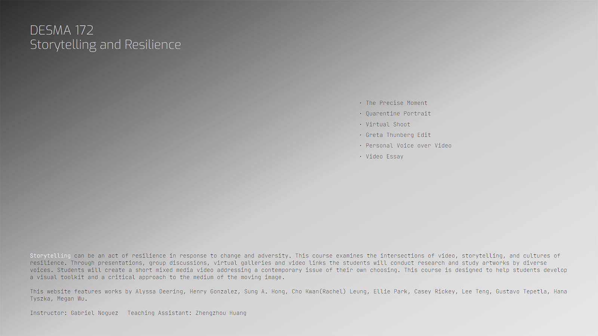

Design
p i e c e s
Storytelling and Resillience
2 0 2 0

Storytelling and Resillience is a website that features students photo and video assignments in
fall 2020 course DESMA 172: Storytelling and Resillience at Design Media Arts Department, UCLA.
For this website, I desgined and brought to life ways to show photos and videos in a simple and smooth manner.
.
.
Link to
website